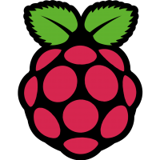

Raspberry-Pi

All of the manipulator and driving motors are operated by Cytron and Hercules motor drivers, which receive commands from the Arduino-Mega Controller, which in turn receives commands serially from the Raspberry-pi.
Low RPM and High Torque DC Planetary Gear Motors are used to propel the rover.


The GPS goal following, obstacle avoidance and ball detection works in synchronization to accomplish the autonomous task.
The data from GPS module and Inertial Measurement Unit (IMU) are combined using the Kalman Filter for better localization of the rover in the local ‘Map’ frame.
A PID control system is implemented for efficient and smooth traversal of rover to its designated GPS goal location.
The ultrasonic sensors are mounted on the rover for detecting and avoiding massive obstacle in rover’s traversal path.

For object detection and image processing OpenCV and TensorFlow library integrated on Python script is used.
Arrow and ball detection are achieved by training a model using Keras as the main program interface.
The Rover aligns itself according to the arrow orientation in order to keep the detected class at the centre of the frame and moves till a distance of less than 2 meters from that object is reached which is calculated by the increasing pixel size of the bounding box.

We tried to automate our arm this time and for that we took the help of ROS Rviz simulations.
This was achieved by applying forward and inverse kinematics on the manipulator.
With the help of inverse kinematics the rover calculates the joint angles of the arm joints based on the final coordinates and then we just publish those values to the joint state publisher which then moves the arm in Rviz.

Video streaming is achieved using three Web cameras that are mounted on the Rover. These cam collectively provide a 360° view of the field for effective navigation purpose.
Video streaming is done over 5Ghz band.
A Web server is created using the MJPG-4 streamer of Raspberry-Pi for video transmission at base station.
These feed is visualised at base station by Web GUI.

The Rover is supplied with two - 12V and 16V Lipo battery.
For regulated DC supply, DC-DC buck convertor is used. Apart from that, supply to processor is given by 10,000 and 20,000 mAh power bank.
Protection of DC components is ensured from reverse polarity using PMOS and Diode.